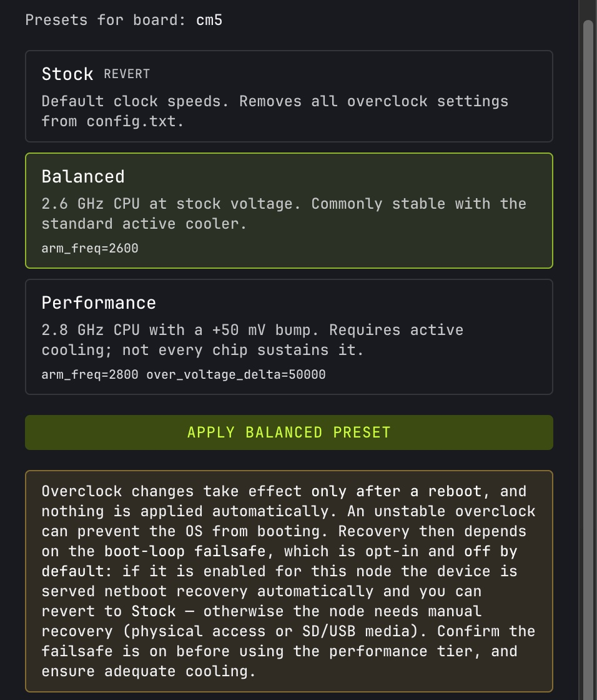
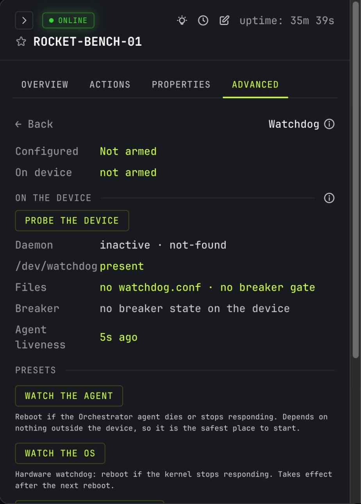
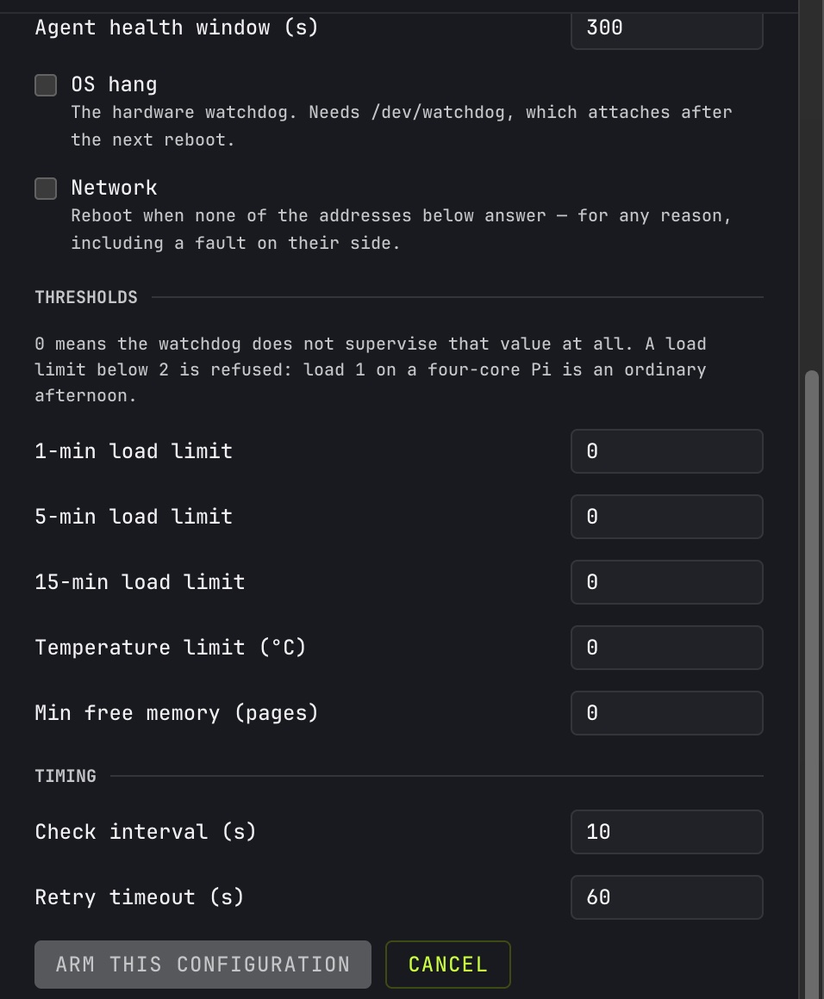
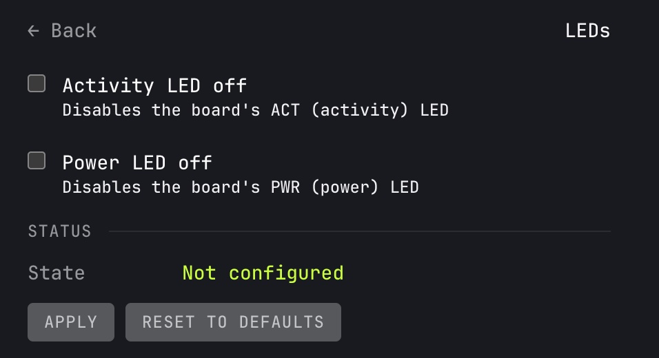

Hardware profiles, overclocking and the watchdog
Declare the carrier board and modules, apply an overclock preset, let a hung device reset itself, and control the board LEDs.
The platform can write a board's firmware configuration (/boot/firmware/config.txt) and arm its hardware watchdog for you. This page covers the four controls that do that: Platform and LEDs on a node's Properties tab, Overclock and Watchdog on its Advanced tab. None of them reboots the device on its own.
Hardware profiles
The platform detects the compute module, but not the carrier board it sits on, nor a clock or TPM chip that stays invisible until its overlay is loaded. A hardware profile declares them: you declare, the platform applies, a scan confirms.
A profile has three parts:
- Board: the carrier. This release offers Compute Blade (for CM4 and CM5), Generic CM4 carrier and Generic CM5 / Pi 5 board. The picker lists only boards that fit the detected module, which is why rocket-bench-01, a CM5 Lite, is not offered the CM4 carrier.
- Variant: a factory option of the board. The Compute Blade has Basic, TPM and Dev; the last two load the TPM overlay.
- Modules: add-ons plugged into a port, such as the DS3231 RTC module on the GPIO header. The platform works out whether a module fits a port and refuses conflicts (two modules on the same pins or I2C address, or a bus the board already uses) when you save.
A profile carries no clock, voltage, fan or PCIe settings. Clock speed is the separate Overclock control below.

Declaring and applying
- Open the node, Properties → Platform.
- Choose a board. Inherit follows the unit's or account's declaration; "Inherit — no board declared" means there is none. A board chosen here overrides the inherited one for this node only. The choice is saved as soon as you pick it, but nothing reaches the device yet.
- Pick the Variant and any Modules.
- Click Apply. The confirmation shows the exact block that "will be written into" config.txt and any setup steps (for an RTC module, reading the system time from it).
- Reboot the node with Reboot. The platform never does it for you.
- Click Scan. It is read-only and probes the device for the declared hardware.
Each part of the profile carries a badge:
| Badge | Meaning |
|---|---|
| declared | Saved, not yet written to the device. |
| re-apply | The declaration changed since the last apply. |
| applied | The device confirmed the config is written; reboot, then scan. |
| confirmed | A scan saw the hardware answering. |
| works | A scan saw the hardware, and the system is using it (today only real-time clocks). |
| not found | Applied, but the scan did not see it: wrong variant, module not seated, or no reboot since the apply. |
A wrong declaration is harmless: the overlay loads and does nothing, and the badge stays not found.
An apply to an offline node is queued: "Apply queued — it will land on the node's next connect on its installed OS." An apply also waits while the node runs the recovery system, and Scan is refused there, because the installed system is not running.
Unit and account profiles
On the Organization page, a unit's policies have a Hardware section with Platform, the variant, Modules and LED behaviour. Nodes in the unit inherit it, and nodes can override it individually (Organizational units and policies). Saving the policy writes nothing to devices; the unit's Apply hardware profile to N nodes button dispatches it, queues it for offline nodes, and still leaves the reboot to you.
Status → Attention lists Hardware profile not applied and Hardware profile applied, reboot to bring it up for nodes that still need a step (Status and audit).
Overclocking

Advanced → Overclock shows Current: (here stock clocks) and the presets for the detected board family. You cannot type your own values:
| Board | Balanced | Performance |
|---|---|---|
| Pi 5, CM5 | 2.6 GHz at stock voltage (arm_freq=2600) | 2.8 GHz, +50 mV (arm_freq=2800 over_voltage_delta=50000) |
| Pi 4, CM4 | 1.8 GHz (arm_freq=1800 over_voltage=2) | 2.0 GHz, GPU 600 MHz (arm_freq=2000 over_voltage=6 gpu_freq=600) |
Stock removes the overclock lines. No preset uses force_turbo, so the board still slows down when idle or hot. Boards without a catalog get "No overclock presets are available for this device model."
Select a preset and click Apply (for example Apply balanced preset). The platform writes the lines into a managed block at the end of config.txt and answers "config.txt updated — reboot the node to apply". Nothing changes until you reboot. An offline node receives the change when it reconnects.
The watchdog
The watchdog lets a hung device reset itself. When you arm it, the agent installs the Linux watchdog daemon, configures it, and lets it restart the board when a supervised check fails. Nothing is armed until you choose to: a new node is not supervised.

Configured is what the platform stores, On device what the device last reported. Probe the device reads the live state, read-only: the daemon, /dev/watchdog, the config files, the breaker and the agent's last sign of life. It also catches a watchdog stopped by hand on the device.

| Preset | Reboots the node when |
|---|---|
| Watch the agent | The agent dies or stops responding for 300 seconds. The safest start. |
| Watch the OS | The kernel stops responding (hardware watchdog, 15-second timeout). Takes effect after the next reboot. |
| Watch the OS and agent | Either of the two. |
| Watch the network | The address you type stops answering 3 pings, for any reason, including a fault at that address. |
All presets check every 10 seconds with a 60-second retry timeout. Custom configuration… sets every field yourself:

| Field | Allowed values |
|---|---|
| Agent health + Agent health window (s) | 120–3600 seconds. |
| OS hang + Hardware timeout (s) | 5–15 seconds. |
| Network + ping targets, Pings per check, Interface (optional) | 1–4 IP addresses (not loopback or multicast), 1–10 pings. |
| 1-min, 5-min, 15-min load limit | 0 (off) or at least 2. |
| Temperature limit (°C) | 0 (off) or 60–110. |
| Min free memory (pages) | 0–131072 (512 MiB). |
| Check interval (s) | 1–60, and shorter than the hardware timeout. |
| Retry timeout (s) | 30–600. |
Click Arm this configuration and confirm. Before arming, the device checks the configuration against its live state and refuses anything that would reboot it immediately: an unreachable ping target, load or temperature already above the limit, no temperature sensor, no hardware watchdog. The panel then shows "Device refused to arm: …". A public ping target gets a warning, because an internet outage would reboot every node watching it at once.
Disarm the watchdog stops supervision.
When the device disarms itself
If a node reboots three times with the watchdog armed, each time within 20 minutes of the last boot, the agent assumes the watchdog is the cause and disarms it. The panel then reads disarmed by the device, the node list shows a WATCHDOG OFF badge, and Status → Attention lists Watchdog disarmed by the device. Find out why the node kept restarting, for example from the terminal or with Send to recovery, then click Re-arm.
Unit policy
A unit's policies have a Watchdog section (Supervision). Saving it arms nothing: each node shows the inherited configuration and an Arm the inherited configuration button.
When not to arm it
- During a long package upgrade: arming installs the
watchdogpackage with apt and fails if the package manager is busy. - With Watch the network pointed at anything you do not control.
- With Watch the OS while a kernel or firmware update is pending: the OS check starts only after the next reboot, so arm it, reboot once while you can watch the node come back, and only then leave it unattended.
LEDs

Properties → LEDs offers Activity LED off and Power LED off. On a board whose profile declares digital LEDs (the Compute Blade), it also offers Stealth mode, which turns off every LED except the digital ones so identify still works, and Digital LED indication: green when cool or idle, red when hot or busy. Apply sends the settings, Reset to defaults removes them. State reads Not configured, Applied on the device, or Queued for an offline node.
The LED settings are not applied in the recovery system, so a blade in stealth mode lights up while it runs recovery and goes dark again when its OS returns. Identify is described in Working with a node.
Next: Organizational units and policies, to set these once for a whole unit.